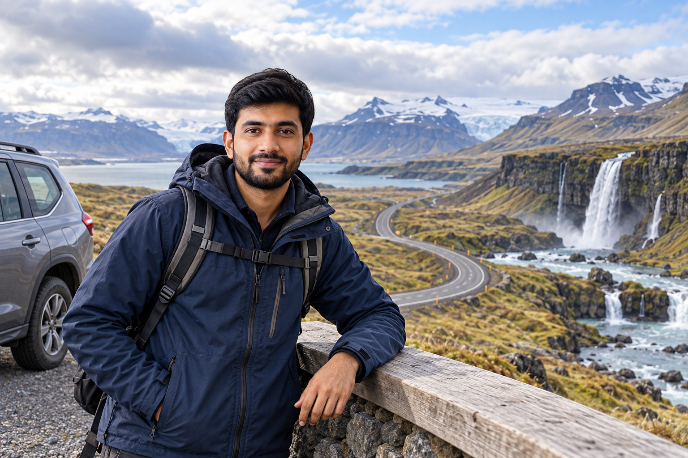
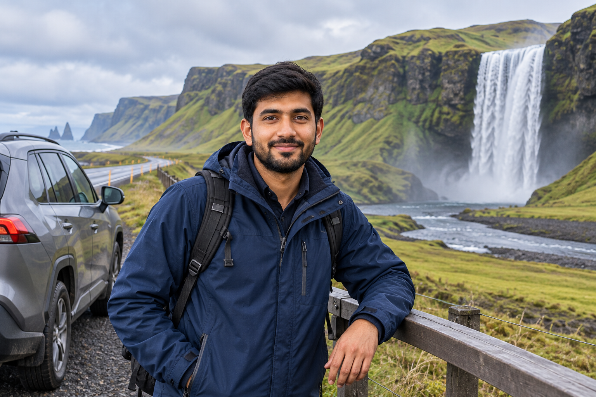
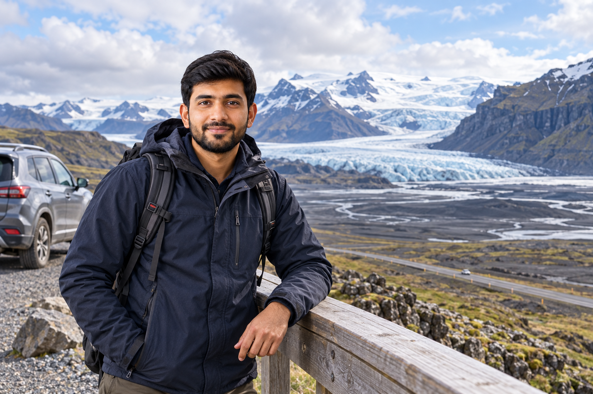

Iceland Ring Road Guide: Route, Stops and How Long You Need
Iceland's Ring Road is the country's classic road-trip route. Officially called Route 1, it circles most of the island and connects South Iceland, the glacier region, East Iceland, North Iceland, and West Iceland in one continuous loop. For a first-time visitor who wants to see more than Reykjavík and the South Coast, it is one of the clearest ways to organize a longer Iceland trip.
The road itself is about 1,332 km / 828 miles, but that number can be misleading. A normal Ring Road trip becomes much longer once you add places such as Reynisfjara, Jökulsárlón, Dettifoss, Mývatn sights, accommodation, food stops, and optional regional detours. The question is therefore not simply how fast you can drive 1,332 km. It is how much time you need to experience the regions connected by the road without spending most of the trip behind the wheel.
For most first-time visitors, I would treat 10 days as a strong target for a complete Ring Road trip. Seven days is possible but fast. Twelve to fourteen days gives you much more room for hikes, weather changes, slower regional travel, and optional detours.
Iceland Ring Road at a Glance

| Question | Practical Answer |
|---|---|
| Official road number | Route 1 |
| Approximate length | 1,332 km / 828 miles |
| Main route shape | Full loop around most of Iceland |
| Best first-time duration | Around 10 days |
| Fast version | 7 days |
| Slower version | 12–14 days |
| Best transport | Rental car for independent travel |
| 4WD required? | Not automatically on the standard Ring Road |
| F-roads required? | No |
| Best general season | Late spring through early autumn |
| Winter possible? | Yes, but with much more weather flexibility |
| Clockwise or counterclockwise? | Both work |
| Does it include Golden Circle? | No |
| Does it include Snæfellsnes ? | No |
| Does it include Westfjords ? | No |
That last group of answers matters.
Several famous Iceland routes are often added to Ring Road trips but are not actually part of Route 1.
What Is Iceland's Ring Road?
The Ring Road is Iceland's main national highway.
Its official road number is:
Route 1.
It runs around most of the country and links major regions including:
- ✓South Iceland
- ✓Southeast Iceland
- ✓East Iceland
- ✓Northeast Iceland
- ✓North Iceland
- ✓Northwest Iceland
- ✓West Iceland
It also connects or passes close to important towns such as:
- ✓Selfoss
- ✓Vík
- ✓Höfn
- ✓Egilsstaðir
- ✓Akureyri
- ✓Blönduós
- ✓Borgarnes
The road is used by:
- ✓Residents
- ✓Freight traffic
- ✓Tourists
- ✓Regional buses
It is not a purpose-built scenic tourist highway.
That is one reason the experience feels more like traveling through Iceland rather than following a theme-park route.
Is the Whole Ring Road Paved?
The main Route 1 is now paved through the normal Ring Road circuit.
That does not mean every road you use during the trip will be paved.
You may leave Route 1 for:
- ✓Attractions
- ✓Villages
- ✓Viewpoints
- ✓Regional detours
and encounter:
- ✓Gravel
- ✓Narrower roads
- ✓Rougher surfaces
This is particularly relevant in:
- ✓East Iceland
- ✓North Iceland
- ✓Optional rural detours
So a Ring Road trip can involve gravel even when Route 1 itself is paved.
Is the Ring Road Open All Year?
Route 1 is generally maintained as a year-round road.
However:
weather can temporarily close sections.
This is particularly important in:
- ✓Winter
- ✓Storms
- ✓Heavy snow
- ✓Strong wind
Do not confuse:
year-round road
with:
guaranteed access every day of the year.
Before each driving day, check:
- ✓Road status
- ✓Weather
- ✓Wind
- ✓Closures
A hotel reservation on the other side of the island does not keep the road open.
Do You Need F-Roads for the Ring Road?
No.
A normal Ring Road trip does not require:
- ✓F-roads
- ✓Highland driving
- ✓River crossings
This is one of the reasons the route works so well for first-time visitors.
You can experience an enormous range of Icelandic landscapes while staying primarily on:
standard roads.
Do You Need a 4WD?
Not automatically.
For a standard Ring Road trip during favorable summer conditions, a normal 2WD can be suitable.
A 4WD becomes more attractive when:
- ✓Traveling in winter
- ✓Conditions are more difficult
- ✓Adding rougher regional roads
- ✓You want greater clearance
But Route 1 itself does not become an F-road simply because it circles Iceland.
For the detailed vehicle decision, use Renting a Car in Iceland: 2WD vs 4WD, Insurance and Costs.
What Does the Ring Road Actually Include?
A useful first-time Ring Road route generally connects:
Reykjavík → South Iceland → Southeast Iceland → East Iceland → Mývatn/North Iceland → Akureyri → Northwest Iceland → West Iceland → Reykjavík
That creates the full circle.
Main Ring Road Regions
Southwest Iceland
The trip normally begins or ends around:
- ✓Reykjavík
- ✓Selfoss
This is the connection between the capital area and the wider national road network.
South Iceland
This is where many first-time visitors encounter:
- ✓Major waterfalls
- ✓Black-sand coastline
- ✓Vík
- ✓Glacier landscapes
Many attractions sit close enough to Route 1 to fit naturally into the road trip.
Southeast Iceland
This is the glacier-heavy section.
Major Ring Road experiences include:
- ✓Vatnajökull region
- ✓Skaftafell
- ✓Jökulsárlón
- ✓Diamond Beach
- ✓Höfn
This is one of the strongest parts of the whole circuit.
East Iceland
The route becomes quieter.
Expect:
- ✓Fjords
- ✓Small towns
- ✓Mountain scenery
- ✓Reindeer country
- ✓Longer rural stretches
Egilsstaðir acts as an important service center.
Northeast Iceland
This is where volcanic landscapes become especially prominent.
The Mývatn region can include:
- ✓Geothermal areas
- ✓Lava formations
- ✓Craters
- ✓Lake landscapes
Dettifoss is a common detour depending on:
- ✓Season
- ✓Road access
North Iceland
Important stops include:
- ✓Goðafoss
- ✓Akureyri
Longer trips may also add:
- ✓Húsavík
- ✓Diamond Circle
but these are optional extensions rather than basic Ring Road requirements.
Northwest Iceland
This section moves through:
- ✓Agricultural valleys
- ✓Small communities
- ✓Open landscapes
It is often treated too quickly because travelers are eager to reach Reykjavík.
But it provides the transition between:
North Iceland and West Iceland.
West Iceland
Borgarnes is a practical Ring Road service town.
From here, you can:
- ✓Return toward Reykjavík
- ✓Add West Iceland
- ✓Detour to Snæfellsnes
depending on how much time you have.
What Is Not Part of the Ring Road?
This is where many first-time plans become too ambitious.
Several major Iceland destinations require leaving the main loop.
Golden Circle
The Golden Circle is:
not part of Route 1.
Its major attractions include:
- ✓Þingvellir
- ✓Geysir
- ✓Gullfoss
However, it fits easily near the beginning or end of many Ring Road trips.
That is why many itineraries combine:
Golden Circle + Ring Road.
Snæfellsnes Peninsula
Snæfellsnes is also:
not on the Ring Road.
You need to leave the main route and drive onto the peninsula.
Major sights include:
- ✓Búðir
- ✓Arnarstapi
- ✓Djúpalónssandur
- ✓Kirkjufell
A full Snæfellsnes loop can easily use:
one full day.
Do not add it to the Ring Road as if it is a one-hour roadside detour.
Westfjords
The Westfjords are definitely:
not part of a standard Ring Road trip.
They require a major regional detour.
Adding them can require:
- ✓Several additional days
- ✓More driving
- ✓Different road planning
For a first 10-day Ring Road:
I would leave them out.
Highlands
The Highlands sit inland.
They involve:
- ✓F-roads
- ✓Seasonal access
- ✓Different vehicle requirements
They should not be treated as a normal Ring Road extension.
Reykjanes Peninsula
Reykjanes lies southwest of Reykjavík toward:
KEF airport.
It can work as:
- ✓Arrival-day
- ✓Departure-day
sightseeing when conditions allow.
It is not part of Route 1.
How Many Days Do You Need for the Ring Road?
This is one of the most important planning decisions.
Theoretically, you can drive the full route very quickly.
That does not mean you should.
A meaningful Ring Road trip needs time for:
- ✓Attractions
- ✓Food
- ✓Fuel
- ✓Walking
- ✓Hotel check-in
- ✓Weather
- ✓Photo stops
- ✓Detours
My Recommendation
5 Days
Too rushed for most first-time visitors.
7 Days
Possible, but fast.
10 Days
Strong first-time choice.
12–14 Days
Much more relaxed.
14+ Days
Best for travelers adding:
- ✓Longer hikes
- ✓More North Iceland
- ✓Snæfellsnes
- ✓Extra regional detours
without constant pressure.
Can You Drive the Ring Road in 5 Days?
Physically:
yes.
Would I recommend it for a first visit?
No.
Five days means the route becomes dominated by:
- ✓Driving
- ✓Hotel changes
- ✓Brief attraction stops
There is little room for:
- ✓Bad weather
- ✓Long walks
- ✓Mývatn
- ✓Eastfjords
- ✓Slow meals
If you have only five days, a much better first Iceland trip is usually:
- ✓Reykjavík
- ✓Golden Circle
- ✓South Coast
- ✓Jökulsárlón
then return west.
That gives you more actual sightseeing and less time trying to complete a circle.
Is 7 Days Enough?
Seven days is where a Ring Road becomes more realistic.
But it remains:
fast.
You will need to accept:
- ✓Frequent hotel changes
- ✓Limited regional depth
- ✓Fewer optional stops
- ✓Little weather buffer
A seven-day circuit works best for:
- ✓Experienced road trippers
- ✓Summer travel
- ✓Travelers comfortable with active days
I would not choose it as my default first-time recommendation.
Why 10 Days Works Better
Ten days creates space for the major geographic sections.
You can give real time to:
- ✓South Coast
- ✓Glacier region
- ✓Eastfjords
- ✓Mývatn
- ✓Akureyri
- ✓West Iceland
without making every day a race.
It also gives you more room for:
- ✓Weather changes
- ✓Slow roads
- ✓Rest
This is why the dedicated Iceland 10-Day Itinerary: First-Time Ring Road Trip uses a full ten-day loop rather than compressing the route into one week.
Is 14 Days Better?
If you have two weeks:
yes.
Fourteen days allows the Ring Road to feel much more like:
travel
and much less like:
route completion.
You can add:
- ✓Longer hikes
- ✓More Eastfjords
- ✓More Mývatn
- ✓Húsavík
- ✓Snæfellsnes
or simply stay longer in places you enjoy.
Ring Road Duration Comparison
| Trip Length | Pace | Best For |
|---|---|---|
| 5 days | Very rushed | Not recommended for most first-timers |
| 7 days | Fast | Summer road trippers |
| 10 days | Balanced | Strong first-time choice |
| 12 days | Comfortable | More regional depth |
| 14 days | Relaxed | Hiking + detours |
| 14+ days | Very flexible | Deeper Iceland road trip |
Clockwise or Counterclockwise?
There is no universally correct direction.
You can drive:
Counterclockwise
Reykjavík → South → East → North → West
or:
Clockwise
Reykjavík → West → North → East → South
Both complete the same national loop.
Why I Prefer Counterclockwise for Many First-Time Visitors
Counterclockwise gives you:
- ✓Golden Circle option early
- ✓South Coast early
- ✓Jökulsárlón early
- ✓Gradual movement into quieter East Iceland
This can make the beginning of the trip easier to understand.
You start with some of Iceland's most recognizable attractions and become more comfortable with:
- ✓Vehicle
- ✓Roads
- ✓Weather checks
before reaching longer rural sections.
Reasons to Drive Clockwise Instead
Clockwise can be better when:
- ✓North Iceland weather looks stronger first
- ✓South Iceland faces bad weather
- ✓Accommodation is easier to book in reverse
- ✓Activity dates favor the north first
Weather should sometimes decide the direction.
Do Not Choose Direction for Sunrise and Sunset Alone
You may see advice claiming one direction is always better because:
- ✓Waterfalls will be on one side
- ✓Light will always be better
- ✓Views will be easier
That is too simplistic.
Your trip lasts:
- ✓Several days
- ✓Across changing weather
- ✓Across different seasons
Choose direction based on:
- ✓Route
- ✓Accommodation
- ✓Weather
- ✓Activities
not one photography theory.
Where Should You Start the Ring Road?
For most international visitors:
Reykjavík or the capital region
is the simplest start.
You arrive at:
Keflavík International Airport
then either:
- ✓Spend time in Reykjavík
- ✓Collect the rental
- ✓Start the loop
Should You Start Directly From KEF?
Possible.
But I would avoid a long Ring Road driving day immediately after:
- ✓Overnight flight
- ✓Poor sleep
- ✓Jet lag
Fatigue is a real safety issue.
A better arrival can be:
- ✓Reykjavík
- ✓Short Southwest route
- ✓Sleep
then begin the circuit rested.
Can You Start From Another Region?
Yes.
Travelers arriving by:
- ✓Domestic flight
- ✓Ferry
- ✓Regional transport
may begin elsewhere.
But for the classic international first-time trip:
capital area start/end
is simplest.
Should You Add the Golden Circle?
For a first-time Iceland trip:
usually yes.
The Golden Circle gives you:
- ✓Þingvellir
- ✓Geysir
- ✓Gullfoss
and fits naturally on the southern side of the country.
But think of it as:
an additional loop
rather than part of Route 1.
How Much Time Does the Golden Circle Need?
A normal first visit deserves:
most of a day.
Do not treat all three attractions as a quick two-hour detour on a long Ring Road transfer day.
If your trip is already too short:
skip the Golden Circle rather than damaging the entire Ring Road pace.
Should You Add Snæfellsnes?
For:
10 days
Snæfellsnes is possible but makes the schedule more active.
For:
12–14 days
it becomes much easier to include.
Give it:
a full day
rather than trying to see:
- ✓Arnarstapi
- ✓Djúpalónssandur
- ✓Kirkjufell
while also completing a major Ring Road transfer.
Should You Add the Diamond Circle?
The Diamond Circle in North Iceland can include:
- ✓Mývatn
- ✓Dettifoss
- ✓Ásbyrgi
- ✓Húsavík
- ✓Goðafoss
Parts of it naturally overlap with a Ring Road trip.
A full Diamond Circle, however, requires more time.
For a shorter circuit:
choose selected stops.
For a 12–14 day trip:
consider the larger loop.
South Iceland: The Easiest Ring Road Section to Understand

For many first-time visitors, South Iceland is the most familiar part of the trip.
Route 1 provides access toward major stops including:
- ✓Seljalandsfoss
- ✓Skógafoss
- ✓Vík
- ✓Reynisfjara area
The attractions are relatively concentrated compared with some later regions.
That makes South Iceland feel easy to plan.
It can also create a problem:
you may spend too much time here and rush the rest of the loop.
Do Not Use Half the Trip on the South Coast
If you are completing the full Ring Road, remember:
East and North Iceland also deserve time.
A 10-day circuit should not become:
- ✓Four days South Iceland
- ✓Six rushed days everywhere else
unless South Iceland is intentionally your main priority.
Vík as a Natural Ring Road Stop
Vík works well because it provides:
- ✓Accommodation
- ✓Food
- ✓Fuel
- ✓Groceries
and sits naturally between:
- ✓Western South Coast
- ✓Southeast glacier region
It is useful both:
- ✓Logistically
- ✓Geographically
Reynisfjara Is a Detour From Route 1
The black-sand beach is close to the Ring Road but not directly on the main highway.
That distinction illustrates how the trip works:
Route 1 connects the regions, but many attractions require short side roads.
Your real trip distance will therefore be longer than 1,332 km.
Southeast Iceland: Where You Should Slow Down

The Ring Road then moves into the Vatnajökull region.
For many travelers, this is one of the strongest parts of the entire drive.
Major stops can include:
- ✓Skaftafell
- ✓Jökulsárlón
- ✓Diamond Beach
- ✓Höfn
Do not plan this as a:
drive-through region.
Skaftafell
Skaftafell works best when you allow enough time for:
- ✓One meaningful walk
rather than simply stopping at the visitor center.
You might choose:
- ✓Glacier viewpoint
- ✓Waterfall route
depending on:
- ✓Time
- ✓Current trail conditions
Jökulsárlón
Jökulsárlón sits immediately beside Route 1.
This makes it one of the easiest major Ring Road attractions to include.
Give yourself time for:
- ✓Lagoon
- ✓Photography
- ✓Wildlife watching
and optional seasonal activities.
Do not arrive with only:
15 minutes before sunset or hotel check-in.
Diamond Beach
Diamond Beach sits beside the lagoon area on the ocean side of Route 1.
Treat:
Jökulsárlón + Diamond Beach
as one larger stop rather than two separate travel days.
Höfn
Höfn becomes a logical service and overnight point before moving into East Iceland.
That is where the Ring Road begins to feel less like:
South Coast sightseeing
and more like:
a national circuit.
Why This Transition Matters
On shorter Iceland trips, Jökulsárlón is often the turnaround point.
On the Ring Road:
you keep going east.
That single decision changes the whole trip.
The next section becomes:
- ✓Eastfjords
- ✓Egilsstaðir
- ✓Northeast Iceland
rather than returning to Reykjavík.
East Iceland: Do Not Treat It as a Transfer Day
After Höfn, the character of the Ring Road changes.
The major South Coast attractions become less concentrated, and the road begins moving through:
- ✓Fjords
- ✓Fishing villages
- ✓Mountain valleys
- ✓Long coastal sections
This is where some first-time travelers make a mistake.
They see:
Höfn → Egilsstaðir
as a long transfer between two overnight stops.
It is much better to think of:
the drive itself as the attraction.
The Eastfjords are one of the quieter parts of the Ring Road, and rushing through them removes much of the value of completing the full loop.
How Much Time Do You Need From Höfn to Egilsstaðir?
The direct driving time does not tell you how long the day should take.
You may stop for:
- ✓Fjord viewpoints
- ✓Djúpivogur
- ✓Lunch
- ✓Short walks
- ✓Wildlife
- ✓Weather delays
For a first-time Ring Road trip:
allow most of the day.
Do not plan:
Höfn → Egilsstaðir → several major Egilsstaðir attractions
as if the coastal drive were empty space between them.
Djúpivogur
Djúpivogur is one of the most natural town stops on the eastern section.
It is a small harbor community surrounded by:
- ✓Mountains
- ✓Coast
- ✓Quiet East Iceland scenery
You do not need half a day here on a 10-day Ring Road trip.
But it works well for:
- ✓Coffee
- ✓Lunch
- ✓Short walk
- ✓Fuel
- ✓Breaking up the drive
The town is also known for the outdoor:
Eggin í Gleðivík
art installation along the waterfront.
How Long Should You Stop?
For a standard Ring Road schedule:
30–90 minutes
can be enough depending on:
- ✓Meal
- ✓Weather
- ✓Interest
If you are traveling more slowly:
stay longer.
Do You Need to Visit Every Eastfjords Village?
No.
This is important.
The Eastfjords include places such as:
- ✓Djúpivogur
- ✓Breiðdalsvík
- ✓Stöðvarfjörður
- ✓Fáskrúðsfjörður
- ✓Reyðarfjörður
- ✓Eskifjörður
- ✓Neskaupstaður
They are not all mandatory stops on one Ring Road day.
Choose:
one or two places that genuinely interest you
instead of stopping for:
- ✓Photo
- ✓Coffee
- ✓Walk
in every community.
Otherwise a manageable driving day becomes very long.
The Best Way to Experience the Eastfjords
Use a slower driving style.
Rather than creating a long checklist, leave room for:
- ✓Viewpoints
- ✓Weather
- ✓Wildlife
- ✓Unexpected stops
East Iceland is one of the regions where:
fewer planned stops can create a better day.
That is different from the Golden Circle, where the main route revolves around three clear headline attractions.
Wildlife in East Iceland
East Iceland is Iceland's main wild reindeer region.
You may occasionally see reindeer:
- ✓Near valleys
- ✓Beside roads
- ✓On hillsides
especially when animals move to lower elevations.
Never stop suddenly in the traffic lane because you see wildlife.
Find:
- ✓Safe parking
- ✓Proper pull-off
and keep your distance.
Sheep can also appear near roads throughout rural Iceland.
Should You Drive the Öxi Pass?
Route 939 over:
Öxi
is a mountain shortcut between the Berufjörður area and inland East Iceland.
It can shorten the route toward Egilsstaðir.
But it is not something first-time visitors should automatically accept because:
Google Maps says it is faster.
The road is:
- ✓Gravel
- ✓Steep in places
- ✓More exposed to mountain conditions
and poor weather can make it a much less attractive option.
My First-Time Recommendation
If you are:
- ✓Uncomfortable with mountain roads
- ✓Driving in poor visibility
- ✓Traveling outside favorable conditions
stay with the easier signed main-road route.
Use Öxi only when:
- ✓It is open
- ✓Conditions are suitable
- ✓Your rental permits it
- ✓You are comfortable driving it
Saving some kilometres is not worth creating unnecessary stress.
Winter Changes East Iceland Route Planning
Mountain roads such as Öxi can be:
- ✓Seasonal
- ✓Closed
- ✓Unsuitable
while Route 1 remains the main serviced connection.
In winter and shoulder season:
do not let navigation software choose the road for you.
Check current conditions.
This is exactly the type of situation covered in Driving in Iceland: Road Rules, Weather and Safety.
Egilsstaðir: The East Iceland Hub
Egilsstaðir is the main service center in East Iceland.
It is an excellent place to:
- ✓Refuel
- ✓Buy groceries
- ✓Stay overnight
- ✓Reset after the Eastfjords
- ✓Prepare for North Iceland
It may not feel like one of Iceland's headline natural attractions.
That is fine.
On a Ring Road trip, towns also serve an important logistical role.
Why Egilsstaðir Works Well
After several rural sections, you have easy access to:
- ✓Accommodation
- ✓Restaurants
- ✓Supermarkets
- ✓Fuel
- ✓Regional services
That makes it a sensible overnight point before continuing toward:
- ✓Northeast Iceland
- ✓Mývatn
Should You Detour to Seyðisfjörður?
Seyðisfjörður is a beautiful fjord town east of Egilsstaðir.
It is not directly on Route 1.
You reach it by crossing:
Fjarðarheiði
on Route 93.
The drive itself can be scenic.
But it adds:
- ✓Distance
- ✓Mountain driving
- ✓Time
Add Seyðisfjörður If:
- ✓You have 12–14 days
- ✓Towns and fjords are a priority
- ✓Conditions are good
- ✓You can give it meaningful time
Skip It If:
- ✓Your Ring Road is already rushed
- ✓You have seven days
- ✓Weather is poor
- ✓You mainly want the core Route 1 loop
Do not add a detour simply because it appears close on the map.
Should You Visit Hengifoss?
Hengifoss is another popular East Iceland detour.
It involves:
- ✓Driving away from the main Ring Road
- ✓A proper hike
This means it needs a real time allocation.
For:
10 days
I would include it only when East Iceland is a priority and the rest of the itinerary remains comfortable.
For:
12–14 days
it becomes much easier to justify.
Should You Visit Stuðlagil Canyon?
Stuðlagil is a striking basalt canyon north of the Egilsstaðir area.
But again:
it is not a five-minute Ring Road stop.
Access choices and walking time make it a deliberate detour.
For a fast Ring Road:
skip it.
For a slower trip:
it can be an excellent addition.
The mistake is trying to fit:
- ✓Seyðisfjörður
- ✓Hengifoss
- ✓Stuðlagil
- ✓Eastfjords
into one day simply because they all appear under:
East Iceland.
Egilsstaðir to Mývatn
The next major Ring Road section crosses the interior of northeast Iceland.
Compared with the Eastfjords:
- ✓Towns become less frequent
- ✓Landscape becomes more open
- ✓Services become more spread out
This is a good section to begin with:
- ✓Fuel
- ✓Water
- ✓Snacks
rather than waiting until the vehicle is nearly empty.
Should You Add Dettifoss?
For most first-time Ring Road travelers:
yes, if access and conditions are good.
Dettifoss is one of North Iceland's major natural attractions.
However, it requires leaving Route 1.
This means it needs to be treated as:
a proper detour
rather than a roadside waterfall.
Which Road Should You Use for Dettifoss?
There are two main approaches.
Road 862 — West Side
For most first-time travelers, this is the simpler default.
Road 862 is:
paved.
It provides access to the west side of Dettifoss and links toward:
- ✓Ásbyrgi
farther north.
However, seasonal road service still matters.
Current guidance notes that parts of the route do not receive normal winter service during part of the colder season.
Always check conditions before driving.
Road 864 — East Side
Road 864 provides the eastern approach.
It is:
gravel
and has stronger seasonal limitations.
It closes during winter conditions and generally reopens only when conditions permit around early summer.
For a first Ring Road:
I would normally choose Road 862 when it is open and suitable.
Dettifoss vs Full Diamond Circle
These are not the same commitment.
You can:
visit Dettifoss and return toward Mývatn
without completing the entire Diamond Circle.
The full Diamond Circle is roughly:
250 km
and includes major places such as:
- ✓Dettifoss
- ✓Ásbyrgi
- ✓Húsavík
- ✓Lake Mývatn
- ✓Goðafoss
Trying to include the whole circuit inside a fast Ring Road can overload North Iceland.
For 7 Days
Choose:
- ✓Mývatn
- ✓Goðafoss
and perhaps Dettifoss if the day still works.
For 10 Days
Dettifoss is easier to include.
The full Diamond Circle still needs careful pacing.
For 12–14 Days
A larger North Iceland loop becomes much more realistic.
Lake Mývatn: Do Not Make This a One-Hour Stop
Mývatn is not one single attraction.
It is a whole volcanic region.
That distinction is important.
The area includes possibilities such as:
- ✓Hverir/Námafjall
- ✓Dimmuborgir
- ✓Hverfjall
- ✓Skútustaðagígar
- ✓Lake viewpoints
- ✓Geothermal bathing
You cannot meaningfully see everything in:
60 minutes.
How Much Time Does Mývatn Need?
For a first 10-day Ring Road:
I would aim for at least:
half a day
and preferably more.
For a slower trip:
one full day
works much better.
This is one of the first places I would add time if expanding:
10 days → 12 days.
Hverir / Námafjall
Hverir is the geothermal area east of Lake Mývatn.
You will see:
- ✓Steam vents
- ✓Bubbling mud
- ✓Mineral colors
- ✓Bare geothermal ground
It is conveniently positioned close to Route 1.
This makes it one of the easiest major Mývatn stops to include.
Safety Rule
Stay on:
marked paths.
The ground can be:
- ✓Hot
- ✓Fragile
- ✓Unsafe
Do not step beyond barriers for a better photograph.
Dimmuborgir
Dimmuborgir is a lava-field area with:
- ✓Pillars
- ✓Arches
- ✓Caves
- ✓Walking trails
Unlike a viewpoint where you stop for ten minutes, it is better when you actually:
walk one of the routes.
Choose a trail that fits your time.
Do not feel you need to complete the longest walk.
Hverfjall
Hverfjall is a large volcanic crater near Mývatn.
A trail climbs to:
the crater rim.
This works well for travelers who want a more active stop.
But it takes more time than:
- ✓Parking
- ✓Photograph
- ✓Leaving
If you plan Hverfjall, reduce the number of other Mývatn stops that day.
Skútustaðagígar
The pseudocraters near the southern side of Lake Mývatn offer another relatively accessible stop.
They can be useful when you want:
- ✓Shorter walk
- ✓Lake views
without committing to a longer crater hike.
You Do Not Need Every Mývatn Attraction
This is the same principle used throughout the Ring Road.
For a 10-day trip, choose perhaps:
- ✓Hverir
- ✓Dimmuborgir
- ✓One additional Mývatn stop
rather than racing through six places.
A Ring Road is better when each region gets:
some depth
instead of every attraction getting ten minutes.
Mývatn as an Overnight Base
Sleeping near Mývatn can be an excellent choice.
It gives you:
- ✓Evening light
- ✓Morning flexibility
- ✓Less pressure to drive immediately toward Akureyri
This is particularly useful when your previous day includes:
- ✓Egilsstaðir
- ✓Dettifoss
or your next day includes several Mývatn sights.
Mývatn to Goðafoss
Moving west from Mývatn, Route 1 eventually reaches:
Goðafoss.
This is one of the easiest major waterfalls to include on the entire Ring Road.
Why?
Because Route 1 passes directly by it.
There is no major regional detour.
Goðafoss
Goðafoss is about:
- ✓12 meters high
- ✓30 meters wide
and has established viewing access on both sides of the river.
Parking and paved paths make it much easier to visit than some remote waterfalls.
How Much Time Do You Need?
A normal first visit can work well with roughly:
45–90 minutes.
Longer if you want:
- ✓Both sides
- ✓Photography
- ✓Slow walk
Do not skip it simply because:
you already saw many waterfalls in South Iceland.
Its setting and shape are different.
Goðafoss to Akureyri
From Goðafoss, Route 1 continues toward:
Akureyri.
This section includes the:
Vaðlaheiðargöng tunnel
on the main route.
The tunnel is tolled.
For normal Ring Road planning:
check the current:
- ✓Price
- ✓Payment process
before passing through.
Rental-company handling can differ.
Do You Have to Use Vaðlaheiðargöng?
There is an older road route around:
Víkurskarð
that can avoid the tunnel.
But for most visitors:
the tunnel is the simpler Ring Road connection.
Do not make a lengthy diversion purely to save a relatively small toll unless:
- ✓You specifically want that route
- ✓Conditions are suitable
Your time also has value.
Akureyri: The Main Urban Stop in North Iceland
Akureyri is often called:
the Capital of North Iceland.
After several days of:
- ✓Rural roads
- ✓Small settlements
- ✓Nature stops
it gives the Ring Road a very different pace.
You can use the stop for:
- ✓Restaurants
- ✓Groceries
- ✓Laundry
- ✓Fuel
- ✓Swimming
- ✓City walking
- ✓Rest
That can be more valuable than adding another waterfall.
How Much Time Does Akureyri Need?
For a fast Ring Road:
a few hours + overnight
may be enough.
For 10 days:
I would avoid using an entire day unless the city is a priority.
For 12–14 days:
you can slow down and explore more comfortably.
Central Akureyri is relatively compact.
You do not need to spend the visit continuously moving the rental car.
Should You Stay in Akureyri or Mývatn?
Both work.
They serve slightly different purposes.
Stay at Mývatn If:
- ✓Volcanic landscapes are your priority
- ✓You want more Mývatn time
- ✓You want an early start around the lake
Stay in Akureyri If:
- ✓You want restaurants
- ✓You want more urban services
- ✓You prefer a city evening
- ✓You want to move farther west before the next day
For a 10-day route, accommodation availability may decide.
Should You Add Húsavík?
Húsavík is best known for:
- ✓Whale watching
It sits north of the Ring Road.
That makes it an:
optional detour.
Add Húsavík If:
- ✓Whale watching is a trip priority
- ✓You have enough North Iceland time
- ✓You are staying more than one night in the region
Skip It If:
- ✓You already have a rushed seven-day loop
- ✓You are only adding it to say you visited
- ✓The activity does not interest you
Do not add every famous North Iceland town automatically.
Akureyri to Northwest Iceland
West of Akureyri, the trip changes again.
The concentration of headline attractions drops.
The route becomes more about:
- ✓Valleys
- ✓Farms
- ✓Horses
- ✓Small communities
- ✓Long landscapes
This section can feel quieter after:
- ✓Mývatn
- ✓Goðafoss
Do not make the mistake of treating it as:
empty road that must be driven as quickly as possible.
But also do not overload it with every possible detour.
Skagafjörður
Skagafjörður is strongly associated with:
- ✓Icelandic horses
- ✓Farming
- ✓Regional history
The Ring Road runs through the wider region.
Possible stops include:
- ✓Local viewpoints
- ✓Small towns
- ✓Cultural sites
For a first 10-day trip:
choose perhaps:
one meaningful stop
rather than turning the whole day into another attraction checklist.
Glaumbær
Glaumbær is a historic turf-farm museum area and a useful choice if you want to add:
- ✓Icelandic history
- ✓Architecture
to a trip dominated by natural sights.
It requires a detour from the Ring Road but is manageable when:
- ✓You have time
- ✓Museum/history interests you
Skip it if you are already behind schedule.
Hvítserkur
Hvítserkur is a distinctive sea stack on the Vatnsnes Peninsula.
It is popular in photographs.
But the detour is larger than the map may initially suggest.
To visit it, you leave the direct Ring Road corridor and add:
- ✓Regional driving
- ✓Gravel depending on route
- ✓Extra time
Should You Add It?
For a 10-day Ring Road:
only if it is a real priority.
For a 12–14 day trip:
much easier.
Do not sacrifice:
- ✓Mývatn
- ✓Eastfjords
- ✓Sleep
to force in Hvítserkur.
Blönduós
Blönduós is another useful northwest service stop.
It can provide:
- ✓Fuel
- ✓Food
- ✓Break
- ✓Accommodation
Not every overnight town needs to be:
a bucket-list destination.
On a long road trip, good service locations keep the route practical.
Northwest Iceland: Keep the Transfer Realistic
A common mistake is planning:
Akureyri → every Vatnsnes attraction → Borgarnes → Snæfellsnes
in one day.
That is too much for most travelers.
Choose:
- ✓Direct progress west
or:
- ✓One significant northwest detour
rather than all of them.
Borgarnes: The West Iceland Decision Point
Borgarnes is one of the most useful towns near the western part of the Ring Road.
It sits well for travelers moving between:
- ✓Reykjavík
- ✓North Iceland
- ✓West Iceland
- ✓Snæfellsnes
This makes it an excellent planning point.
When you reach Borgarnes, you need to decide:
finish the Ring Road soon or add another region?
Option 1: Borgarnes → Reykjavík
Choose this when:
- ✓You have seven days
- ✓Weather caused delays
- ✓You want an easier final day
- ✓Snæfellsnes is not essential
This protects the rest of the trip.
Option 2: Add Snæfellsnes
Choose this when:
- ✓You have enough time
- ✓Weather looks good
- ✓Driver is rested
- ✓Accommodation works
Snæfellsnes can include places such as:
- ✓Búðir
- ✓Arnarstapi
- ✓Djúpalónssandur
- ✓Kirkjufell
But give the peninsula:
a real day.
Do not reduce it to:
Borgarnes → Kirkjufell photo → Reykjavík.
If you cannot give it enough time:
save it for another trip.
Option 3: Explore Borgarfjörður Instead
A useful alternative to Snæfellsnes is spending more time around inland West Iceland.
Possible stops include:
- ✓Hraunfossar
- ✓Barnafoss
- ✓Reykholt
- ✓Geothermal areas
This can create a slower final section without a full peninsula loop.
For travelers tired after eight or nine days of driving:
this may be the better choice.
What Are the Essential Ring Road Stops?
If you need to simplify the entire loop, I would protect these regional experiences first.
South
- ✓One major waterfall section
- ✓Vík/Reynisfjara area
Southeast
- ✓Skaftafell or meaningful glacier stop
- ✓Jökulsárlón/Diamond Beach
East
- ✓Eastfjords drive
- ✓Egilsstaðir as regional base
Northeast
- ✓Mývatn
- ✓Optional Dettifoss when access works
North
- ✓Goðafoss
- ✓Akureyri
West
- ✓Borgarnes/West Iceland transition
Everything else can be adjusted according to:
- ✓Time
- ✓Weather
- ✓Interest
That is how you keep the Ring Road manageable.
Which Stops Are Easiest to Remove?
When the itinerary becomes too full, cut:
Deep East Iceland Detours
Such as:
- ✓Seyðisfjörður
- ✓Hengifoss
- ✓Stuðlagil
You do not need all three.
Full Diamond Circle
Keep:
- ✓Mývatn
- ✓Goðafoss
and perhaps Dettifoss.
Húsavík
Unless whale watching is a priority.
Vatnsnes / Hvítserkur
If time is tight.
Snæfellsnes
If the Ring Road itself has already used your available days.
This approach is much better than:
keeping every stop and driving faster.
Why Ring Road Plans Become Too Busy
The problem usually starts with a map.
Places appear close together.
The traveler adds:
- ✓Waterfall
- ✓Beach
- ✓Canyon
- ✓Town
- ✓Hike
until there are:
eight or ten stops in one day.
What the map does not show clearly is the time spent:
- ✓Parking
- ✓Walking
- ✓Eating
- ✓Refueling
- ✓Checking in
- ✓Waiting for weather
- ✓Using toilets
A three-hour driving day can easily become:
an eight-hour travel day.
Plan accordingly.
Use Three Levels of Stops
A simple planning method works well.
Level 1: Must See
Maximum:
2–3 major stops per day.
Level 2: Optional
Add only when:
- ✓Weather
- ✓Energy
- ✓Time
are good.
Level 3: Skip Without Regret
Places you already know are expendable.
This creates flexibility without rebuilding the route every morning.
Do Not Protect Optional Stops at the Expense of the Route
Imagine you lose two hours because of:
- ✓Weather
- ✓Road conditions
- ✓Slow breakfast
Do not try to recover the time by:
- ✓Speeding
- ✓Skipping lunch
- ✓Driving tired at night
Remove:
the optional stop.
That is why every Ring Road day should have one.
How the Route Changes by Trip Length
7-Day Ring Road
Focus on:
- ✓Core South Coast
- ✓Jökulsárlón
- ✓East transfer
- ✓Mývatn
- ✓Goðafoss
- ✓Akureyri
- ✓Direct return west
Skip most major detours.
10-Day Ring Road
You can add more depth around:
- ✓Eastfjords
- ✓Dettifoss
- ✓Mývatn
- ✓West Iceland
You may also fit Snæfellsnes if the pace remains reasonable.
12–14 Days
Now you can consider:
- ✓Seyðisfjörður
- ✓Hengifoss
- ✓Húsavík
- ✓Fuller Diamond Circle
- ✓Vatnsnes
- ✓Snæfellsnes
without turning every day into a long transfer.
That is where the Ring Road starts feeling genuinely relaxed.
One Night Everywhere vs Two-Night Bases
Many Ring Road trips involve:
one hotel per night.
That is efficient.
It is also tiring.
If you have 12–14 days, consider two-night stays around places such as:
- ✓South Coast
- ✓Mývatn
- ✓Akureyri
A two-night base gives you:
- ✓Less packing
- ✓More weather flexibility
- ✓Slower mornings
For a 10-day first trip, however, frequent hotel changes are difficult to avoid if you want the full circuit.
The Middle of the Ring Road Is Where Flexibility Matters Most
The first days around:
- ✓Reykjavík
- ✓Golden Circle
- ✓South Coast
are easy to imagine before the trip.
The middle section:
East Iceland → Mývatn → Akureyri
is where travelers often discover:
- ✓Distances feel longer
- ✓Weather changes
- ✓They want more time
Protect this section.
Do not arrive in East Iceland already:
two days behind a schedule that was too ambitious from the start.
What Is the Best Time to Drive Iceland's Ring Road?
You can travel Route 1 throughout the year, but the experience changes dramatically with the season.
For a first independent Ring Road trip, the easiest period is generally:
late spring through early autumn.
That gives you:
- ✓Longer daylight
- ✓Fewer winter-road problems
- ✓Easier sightseeing
- ✓More accommodation/activity options
- ✓More forgiving driving conditions
That does not mean summer guarantees:
- ✓Clear skies
- ✓Calm wind
- ✓Dry roads
Icelandic weather can change quickly at any time.
The difference is that summer usually removes many of the complications created by:
- ✓Snow
- ✓Ice
- ✓Very short daylight
- ✓Frequent winter closures
Ring Road by Season
| Season | Ring Road Difficulty | Main Planning Issu e |
|---|---|---|
| June–August | Easiest overall | Crowds, prices, booking demand |
| May | Moderate | Possible winter-like conditions early in season |
| September | Moderate | Increasing weather variation |
| October | More difficult | Shorter days, frost, snow and wind |
| November–March | Most demanding | Snow, ice, storms, limited daylight |
| April | Moderate to difficult | Highly variable spring/winter conditions |
These are general planning categories.
Actual road conditions always matter more than:
the month written on the calendar.
Ring Road in June, July and August
Summer is the simplest time for most first-time visitors.
Advantages include:
- ✓Long daylight
- ✓Standard attractions easier to access
- ✓More accommodation
- ✓Easier driving
- ✓Better conditions for longer regional days
This is also the busiest period.
Expect stronger demand for:
- ✓Rental cars
- ✓Vík accommodation
- ✓Höfn accommodation
- ✓Mývatn accommodation
- ✓Activities
Book early when your dates are fixed.
Midnight Sun Changes the Way You Can Plan
Long summer daylight gives you flexibility.
You may visit popular attractions:
- ✓Earlier
- ✓Later
than normal tour-bus hours.
That can help at places such as:
- ✓Waterfalls
- ✓Jökulsárlón
- ✓Mývatn viewpoints
But do not convert long daylight into:
extremely long driving days.
The driver still becomes tired even when the sky remains bright.
Ring Road in May
May can be an excellent time for a road trip.
You may benefit from:
- ✓Longer days
- ✓Lower demand than peak summer
- ✓Fewer visitors at some stops
But May should not be treated exactly like July.
Higher or northern sections can still experience:
- ✓Snow
- ✓Ice
- ✓Cold
- ✓Strong wind
Check actual conditions each day.
Early May vs Late May
There can be a meaningful difference.
Later May generally feels closer to:
summer road-trip season.
Early May can retain more:
winter-style uncertainty.
Do not choose vehicle type solely because the booking website labels May as spring.
Ring Road in September
September is another attractive period.
You may find:
- ✓Lower crowds
- ✓More darkness for possible Northern Lights
- ✓Good road-trip conditions
especially earlier in the month.
But weather becomes less predictable as the month progresses.
Plan with:
- ✓More clothing
- ✓More road checks
- ✓More schedule flexibility
than you might use in July.
September Is Not Guaranteed Winter
You do not automatically need:
- ✓Largest SUV
- ✓Winter expedition plan
because your trip starts in September.
But you should be more willing to:
- ✓Slow down
- ✓Delay
- ✓Remove a stop
if conditions change.
Ring Road in October
October deserves much more conservative planning.
Possible conditions include:
- ✓Rain
- ✓Frost
- ✓Snow
- ✓Ice
- ✓Strong wind
- ✓Shorter daylight
You can still drive the Ring Road.
But a tightly booked itinerary becomes more vulnerable.
A traveler who would comfortably use:
10 days in July
may benefit from:
- ✓More buffer
- ✓Fewer detours
in October.
Can You Drive the Ring Road in Winter?
Yes.
Route 1 remains Iceland's main national road and receives winter service.
But that does not mean:
a winter Ring Road behaves like a summer Ring Road.
Sections can temporarily become:
- ✓Difficult
- ✓Impassable
- ✓Closed
because of:
- ✓Snow
- ✓Ice
- ✓Wind
- ✓Storms
Who Should Consider a Winter Ring Road?
It makes more sense for travelers who:
- ✓Have winter-driving experience
- ✓Are comfortable on snow and ice
- ✓Can change accommodation plans
- ✓Have extra time
- ✓Accept that attractions may be skipped
Who Should Avoid a Full Winter Ring Road?
I would not make it the default first Iceland self-drive for someone who:
- ✓Has never driven on ice
- ✓Is uncomfortable in strong wind
- ✓Has exactly seven fixed days
- ✓Has non-refundable hotels every night
- ✓Feels pressure to complete every booked stop
A winter:
Reykjavík + Golden Circle + South Coast
trip can be much easier to manage.
Winter Requires a Different Mindset
In summer, your question may be:
“Which attraction should we add?”
In winter, the better question is:
“Which part of today's plan can we remove?”
That difference matters.
Check the Road Every Day
For the Ring Road, use current official road information before departure.
Check:
- ✓Road status
- ✓Surface conditions
- ✓Wind
- ✓Closures
- ✓Cameras
Do this:
every driving day.
Do not rely only on:
- ✓Yesterday's conditions
- ✓Hotel receptionist from two days ago
- ✓Google Maps
The Icelandic road-information system exists because conditions can change quickly.
Do Not Check Only Your Starting Town
Suppose you are driving:
Egilsstaðir → Mývatn.
The weather in:
- ✓Egilsstaðir
may look fine.
The road farther north may have:
- ✓Fog
- ✓Ice
- ✓Wind
Check the full route.
The same applies to:
- ✓Vík → Höfn
- ✓Mývatn → Akureyri
- ✓Akureyri → Borgarnes
How Much Driving Per Day Is Reasonable?
This is one of the biggest Ring Road planning mistakes.
Travelers often use:
Google Maps driving time
as the length of the day.
It is not.
If the map says:
3 hours
your real travel day may become:
- ✓7 hours
- ✓9 hours
- ✓Longer
once you include:
- ✓Waterfalls
- ✓Meals
- ✓Fuel
- ✓Toilets
- ✓Walks
- ✓Photography
- ✓Hotel check-in
My Planning Rule
For a sightseeing-heavy Ring Road day, I prefer most scheduled driving to stay around:
2–4 hours
when practical.
Some transfer days will naturally be longer.
But if nearly every day contains:
5–6 hours of pure driving
the itinerary is probably too aggressive.
One Long Day Is Fine
A Ring Road will naturally include days with:
- ✓Longer distances
- ✓Fewer attractions
That is normal.
The problem is when:
every day becomes the long day.
Driving Distance Matters Less Than Driving Time
Two routes covering:
250 km
can feel completely different.
One may be:
- ✓Smooth Route 1
- ✓Few stops
Another may include:
- ✓Gravel detours
- ✓Mountain roads
- ✓Waterfalls
- ✓Hikes
Do not build your schedule using kilometres alone.
Build Buffer Into Every Day
A good Ring Road itinerary should contain:
- ✓Must-do stops
- ✓Optional stops
If the day slows down:
remove the optional stop.
Do not recover time by:
- ✓Speeding
- ✓Skipping food
- ✓Driving tired
This becomes especially important outside summer.
Accommodation Strategy for the Ring Road
Accommodation location can determine whether the route feels:
- ✓Smooth
- ✓Exhausting
Do not choose hotels only because they are:
the cheapest property within 100 km.
Look at where the property sits relative to:
- ✓Previous day's attractions
- ✓Next day's route
Best Type of Accommodation Pattern
A first Ring Road commonly uses overnight areas around:
- ✓Reykjavík
- ✓South Iceland
- ✓Vík
- ✓Southeast Iceland/Höfn
- ✓Egilsstaðir
- ✓Mývatn
- ✓Akureyri
- ✓Northwest/West Iceland
The exact towns can change.
The important point is:
keep progressing around the loop.
Avoid Backtracking for Cheap Accommodation
Suppose you finish sightseeing near:
Jökulsárlón
but book a cheap room far back toward Vík.
You may save money on the room and lose it through:
- ✓Fuel
- ✓Time
- ✓Fatigue
Always compare the location cost too.
Which Ring Road Accommodation Should You Book Early?
Pay particular attention to areas with:
- ✓Limited inventory
- ✓Heavy summer demand
such as:
- ✓Vík/South Coast
- ✓Southeast Iceland
- ✓Mývatn area
You usually have more options in larger service centers such as:
- ✓Reykjavík
- ✓Akureyri
but summer demand can still be strong.
Rural Accommodation Can Be a Strength
Do not assume you always need to stay inside a town.
A rural guesthouse can give you:
- ✓Quieter evening
- ✓Shorter next drive
- ✓Easy parking
- ✓Scenic setting
But check:
- ✓Dinner options
- ✓Breakfast
- ✓Fuel
- ✓Grocery access
before arriving late.
Book Hotels or Stay Flexible?
This depends heavily on season.
Summer
I recommend booking the core overnight structure ahead.
Waiting until the same day can create:
- ✓High prices
- ✓Very long detours
- ✓No suitable room
Shoulder Season
You may have slightly more flexibility.
But remote areas can still have limited inventory.
Winter
Flexibility becomes more valuable because weather can disrupt the route.
The challenge is balancing:
- ✓Flexible bookings
- ✓Available accommodation
Look for cancellation terms that let you adjust without losing the entire booking.
One Night or Two Nights?
A classic 10-day Ring Road involves many:
one-night stays.
That is efficient but tiring.
If you have:
12–14 days
consider two nights in places such as:
- ✓South Iceland
- ✓Mývatn/North Iceland
That reduces:
- ✓Daily packing
- ✓Hotel changes
- ✓Pressure
and creates weather buffer.
Fuel Planning on the Ring Road
Fuel is available around Route 1.
The main rule is:
do not wait until nearly empty.
Fill up when entering quieter sections.
Useful service towns include:
- ✓Selfoss
- ✓Hella
- ✓Vík
- ✓Kirkjubæjarklaustur
- ✓Höfn
- ✓Egilsstaðir
- ✓Akureyri
- ✓Blönduós
- ✓Borgarnes
There are other stations as well.
The list is not meant to imply those are your only options.
Refuel Before Long Rural Sections
This is particularly useful before:
- ✓East Iceland
- ✓Northeast Iceland
- ✓Remote regional detours
A half-full tank is usually not a crisis.
An almost-empty tank plus:
- ✓Closed station
- ✓Storm
- ✓Detour
can become one.
Should You Use an EV for the Ring Road?
Yes, an EV can work.
But it needs more planning than a petrol or diesel vehicle.
Consider:
- ✓Real-world range
- ✓Charging speed
- ✓Charger location
- ✓Hotel charging
- ✓Winter range
- ✓Backup chargers
Charge in Towns, Not at the Last Minute
Towns generally provide the most dependable charging infrastructure.
A useful approach is:
charge while eating or sleeping
rather than creating separate charging-only stops.
Do Not Assume Every Scenic Stop Has a Charger
Natural attractions may have:
- ✓No charger
- ✓Limited charging
- ✓Busy chargers
Enter remote areas with:
comfortable battery margin.
Winter EV Ring Road
Cold weather can reduce usable range.
If you plan a winter EV circuit:
- ✓Add more battery margin
- ✓Identify backup chargers
- ✓Avoid arriving nearly empty
An EV can still work.
The planning simply needs to be more conservative.
2WD or 4WD for the Ring Road?
For a standard summer Ring Road:
2WD can be enough.
You do not need F-roads to complete Route 1.
A 4WD becomes more useful when:
- ✓Winter conditions are likely
- ✓You add rougher detours
- ✓You want more ground clearance
For the full vehicle and insurance decision, use Renting a Car in Iceland: 2WD vs 4WD, Insurance and Costs.
Do Not Upgrade Just Because It Is Iceland
A large SUV can add:
- ✓Rental cost
- ✓Fuel use
without improving a normal summer Ring Road.
Rent the:
smallest appropriate vehicle
that safely fits:
- ✓Season
- ✓Route
- ✓Passengers
- ✓Luggage
How Much Does a Ring Road Trip Cost?
The Ring Road itself has no single admission fee.
Your major costs are:
- ✓Rental car
- ✓Road charges
- ✓Fuel or EV charging
- ✓Accommodation
- ✓Food
- ✓Activities
- ✓Parking
- ✓Occasional tolls
The total varies greatly with travel style.
Transport Cost
A smaller efficient vehicle can save significantly compared with:
- ✓Large SUV
because you save both:
- ✓Rental cost
- ✓Fuel
Over a route that may exceed:
1,700–2,000 km after detours
that difference can become meaningful.
Accommodation Cost
This is usually one of the largest Ring Road expenses.
Prices rise when:
- ✓Summer demand is high
- ✓Booking is late
- ✓Availability is low
Remote location also matters.
Activities
The road trip can be excellent with many free natural stops.
Optional paid experiences may include:
- ✓Glacier hike
- ✓Boat tour
- ✓Geothermal bathing
- ✓Whale watching
You do not need to book a paid activity every day.
Full Trip Budget
For a detailed overall calculation rather than repeating the entire budget here, use Iceland Trip Cost: Budget for 3, 5, 7 and 10 Days.
The important Ring Road lesson is:
your route determines your costs.
Extra detours create:
- ✓More fuel
- ✓More hotel nights
- ✓More activities
Ring Road With a Campervan
A campervan can combine:
- ✓Vehicle
- ✓Accommodation
which appeals to many road trippers.
But it does not remove planning.
You still need:
- ✓Campsites
- ✓Fuel
- ✓Insurance
- ✓Weather checks
- ✓Safe parking
Campervans and Wind
High-sided vehicles are more sensitive to:
strong crosswinds.
A day that is manageable in a small car may feel very different in a camper.
Always consider:
- ✓Wind
- ✓Rental-company guidance
before driving.
Do Not Plan to Sleep at Every Attraction Parking Lot
Normal parking does not automatically permit:
overnight camping.
Use legal:
- ✓Campsites
- ✓Approved overnight locations
A campervan is not a permission slip to sleep anywhere.
Clockwise or Counterclockwise: Final Decision
If conditions are broadly equal, I would still favor:
counterclockwise
for many first-time travelers.
That gives you:
Reykjavík → South Coast → Southeast → East → North → West
The early part of the trip contains familiar major attractions and relatively simple route logic.
But this preference should never override:
- ✓Serious weather difference
- ✓Accommodation availability
- ✓Activity booking
When to Reverse the Route
Drive clockwise if:
- ✓South Iceland has a major storm first
- ✓North Iceland looks clearly better
- ✓Your accommodation works better in reverse
- ✓A fixed activity requires it
There is no prize for completing the route:
counterclockwise.
What Should You Book First?
A useful Ring Road booking order is:
1. Flights
Lock the travel dates.
2. Rental Car
Especially when you need:
- ✓Automatic
- ✓Specific 4WD
- ✓Larger vehicle
3. Core Accommodation
Create the overnight structure.
4. Limited-Capacity Activities
Such as:
- ✓Glacier tours
- ✓Boat tours
- ✓Whale watching
when these are priorities.
5. Flexible Extras
Leave some decisions for:
- ✓Weather
- ✓Energy
Do not book every hour before you arrive.
Do Not Book an Activity That Makes the Whole Route Fragile
For example, if you book:
an early morning activity in North Iceland
the day after a very long East Iceland transfer, you create unnecessary pressure.
Activities should fit the route.
The route should not be distorted around too many fixed appointments.
A 7-Day Ring Road Planning Framework
Seven days is possible.
But the trip needs discipline.
Prioritize:
- ✓South Coast
- ✓Jökulsárlón
- ✓East Iceland progression
- ✓Mývatn
- ✓Goðafoss
- ✓Akureyri
- ✓Direct western return
Keep optional detours limited.
What to Skip With Seven Days
I would usually skip or minimize:
- ✓Snæfellsnes
- ✓Full Diamond Circle
- ✓Seyðisfjörður
- ✓Hengifoss
- ✓Stuðlagil
- ✓Húsavík
- ✓Full Vatnsnes loop
You cannot solve a short trip by:
driving faster.
A 10-Day Ring Road Planning Framework
Ten days is the strongest first-time balance.
You have enough time to cover:
- ✓South Coast
- ✓Glacier region
- ✓Eastfjords
- ✓Mývatn
- ✓Akureyri
- ✓West Iceland
with reasonable depth.
You can add selected detours such as:
- ✓Dettifoss
without making every day extreme.
Snæfellsnes can also fit when:
- ✓Weather
- ✓Energy
- ✓Accommodation
support it.
For the exact schedule, use the dedicated Iceland 10-Day Itinerary: First-Time Ring Road Trip rather than turning this route guide into a duplicate itinerary.
A 14-Day Ring Road Planning Framework
Two weeks changes the character of the trip.
You can slow down.
Possible additions include:
- ✓Longer East Iceland stop
- ✓Hengifoss
- ✓Seyðisfjörður
- ✓Húsavík
- ✓Larger Diamond Circle
- ✓Vatnsnes
- ✓Snæfellsnes
You can also simply:
do fewer things more slowly.
That is often the better use of extra time.
Fourteen Days Does Not Mean Add Everything
Do not respond to extra days by:
- ✓Adding Westfjords
- ✓Adding Highlands
- ✓Adding every peninsula
until the trip becomes rushed again.
Protect some:
empty space.
That is what makes a two-week Ring Road feel different from a 10-day loop.
Should You Add the Westfjords?
Not to a normal 7–10 day Ring Road.
The Westfjords deserve:
- ✓Several days
- ✓Their own route planning
Trying to add them to a short Ring Road creates too much:
- ✓Driving
- ✓Gravel-road time
- ✓Hotel movement
For a longer Iceland trip:
consider them as a separate extension.
Should You Add the Highlands?
Not as a casual Ring Road detour.
Highland travel involves:
- ✓F-roads
- ✓Seasonal openings
- ✓4WD requirements
- ✓Possible river crossings
It is a separate trip-planning problem.
Your standard Ring Road can be excellent without entering the Highlands.
Common Ring Road Mistakes
Trying to Drive It in Five Days
You can physically complete the loop.
That does not make it a good first-time trip.
Thinking 1,332 km Is Your Final Mileage
Sightseeing detours increase it substantially.
Planning Every Day From Google Maps Drive Time
Driving time is not sightseeing time.
Adding Golden Circle Without Extra Time
It is a separate route.
Treating Snæfellsnes as a Small Detour
It deserves meaningful time.
Adding the Westfjords to a Short Trip
They require their own days.
Spending Too Long on the South Coast
Leave enough time for:
- ✓East
- ✓North
Rushing the Eastfjords
The route itself is part of the experience.
Giving Mývatn One Hour
It is a regional destination, not one attraction.
Doing the Full Diamond Circle by Accident
Know whether you are adding:
- ✓Dettifoss
or:
- ✓An entire North Iceland loop
Trusting a Shortcut Because Navigation Suggested It
Check:
- ✓Road surface
- ✓Season
- ✓Conditions
Booking Hotels Too Far Behind the Route
Cheap room can create expensive backtracking.
Waiting Too Long to Book Summer Accommodation
Remote availability can disappear.
Renting 4WD Automatically
Standard summer Route 1 does not inherently require it.
Assuming 4WD Solves Winter
It does not solve:
- ✓Ice
- ✓Wind
- ✓Closures
Driving When Tired Because It Is Still Light
Midnight Sun does not remove fatigue.
Refueling Only When Nearly Empty
Fill before remote stretches.
Arriving at an EV Charger With Almost No Battery
Keep backup range.
Keeping Every Optional Stop When Weather Slows You Down
Cut something.
Treating a Closed Road as a Suggestion
It is not.
Trying to “Make Up Time”
Do not recover delays by speeding.
Booking the Final Night Too Far From Reykjavík or KEF
Protect your departure day.
Where Should You Spend Your Final Night?
This depends on your flight.
For an early international departure:
I would avoid sleeping far away in:
- ✓North Iceland
- ✓East Iceland
the night before.
Move toward:
- ✓Reykjavík
- ✓Reykjanes
- ✓KEF area
with enough margin.
Do Not Finish the Ring Road the Morning of Your Flight
Suppose your flight leaves:
15:00.
Do not plan:
Borgarnes → several attractions → Reykjavík traffic → rental return → KEF
that same morning with no buffer.
Complete the major loop earlier.
Your final international flight should not depend on:
- ✓Perfect roads
- ✓No delays
- ✓No rental return issue
Ring Road Planning Checklist
Before booking, confirm:
Time
- ✓At least 7 days?
- ✓Preferably around 10?
- ✓Weather buffer?
Route
- ✓Clockwise or counterclockwise?
- ✓Golden Circle included?
- ✓Snæfellsnes included?
- ✓Major detours identified?
Vehicle
- ✓2WD or 4WD?
- ✓Enough luggage room?
- ✓Correct tires?
- ✓Automatic/manual?
Roads
- ✓Route 1
- ✓Any gravel detours?
- ✓Any seasonal roads?
- ✓No accidental F-roads?
Accommodation
- ✓South booked?
- ✓Southeast booked?
- ✓East booked?
- ✓Mývatn/North booked?
- ✓Final night positioned safely?
Fuel / EV
- ✓Main service towns known?
- ✓EV chargers planned?
- ✓Backup charging stops?
Activities
- ✓Glacier tour?
- ✓Boat tour?
- ✓Whale watching?
- ✓Enough time around fixed bookings?
Safety
- ✓Road-information source saved?
- ✓Weather source saved?
- ✓Offline maps?
- ✓112 saved?
Flexibility
- ✓Which stops are optional?
- ✓Which day can absorb a delay?
- ↗
- ↗
- ↗
Frequently Asked Questions
How long is Iceland's Ring Road?
Route 1 is approximately:
1,332 km / 828 miles.
Your actual road trip will be longer after sightseeing detours.
How many days do you need for the Ring Road?
Around:
10 days
is a strong first-time target.
Seven days is possible but fast.
Twelve to fourteen days provides a more relaxed trip.
Can you drive the Ring Road in five days?
Yes physically, but I would not recommend it for most first-time visitors.
Is seven days enough?
Yes, but you need to keep detours limited and accept a fast pace.
Is ten days enough?
Yes. Ten days gives a strong balance between completing the loop and seeing the major regions.
Is fourteen days too long?
No. Two weeks gives you time for deeper regional stops and a much more relaxed route.
Is the Ring Road Route 1?
Yes.
Iceland's Ring Road is:
Route 1.
Is the entire Ring Road paved?
The main Route 1 circuit is paved, although many attraction and regional side roads may be gravel.
Is the Ring Road open all year?
It is a year-round national road, but weather can temporarily close sections.
Do you need a 4WD for the Ring Road?
Not automatically. A standard 2WD can be suitable for a normal summer trip.
Do you need a 4WD in winter?
It can provide useful traction, but tires, road conditions, driver experience, and weather remain more important than simply having 4WD.
Do you need F-roads?
No.
A normal Ring Road does not require F-roads.
Does the Ring Road include the Golden Circle?
No. The Golden Circle is a separate route.
Does the Ring Road include Snæfellsnes?
No. Snæfellsnes requires a detour from the main loop.
Does the Ring Road include the Westfjords?
No.
The Westfjords require a significant extension.
Does the Ring Road include the Blue Lagoon?
No.
The Blue Lagoon is on the Reykjanes Peninsula, separate from Route 1.
Which direction should I drive?
Both work.
Counterclockwise is an easy first-time structure, while clockwise can be better if weather or bookings favor North Iceland first.
Is clockwise faster?
No meaningful advantage.
It is the same overall loop in reverse.
Is counterclockwise better?
Not universally. I prefer it for many first-time trips because it begins with the familiar South Coast route, but weather can make clockwise the smarter choice.
Where should I stay on the Ring Road?
Useful overnight regions include:
South Iceland
Vík
Southeast/Höfn
Egilsstaðir
Mývatn
Akureyri
West/Northwest Iceland
Exact stops depend on trip length.
Do I need to book hotels in advance?
For summer, booking the core route ahead is strongly recommended, especially in areas with limited accommodation.
Can I camp around the Ring Road?
Yes, using legal campsites and approved overnight locations. Do not assume any attraction parking area permits overnight camping.
Is the Ring Road crowded?
Traffic can be noticeably busier around popular South Iceland attractions in summer. East and some northern sections can feel much quieter.
Are there petrol stations around the whole route?
Yes, but services become more spread out in some regions. Refuel before you get very low.
Can I drive the Ring Road in an electric car?
Yes. Plan charging stops and maintain comfortable battery margin, particularly in remote regions and winter.
How much driving should I plan per day?
For sightseeing-heavy days, around 2–4 hours of scheduled driving is a useful target when practical, with occasional longer transfer days.
What is the hardest part of the Ring Road?
This changes with weather. In winter, exposed or higher sections can become much more difficult than they are in summer.
Is East Iceland worth the drive?
Yes. The Eastfjords are an important part of what makes a complete Ring Road different from a South Coast out-and-back trip.
Is Dettifoss on the Ring Road?
No. It requires a detour from Route 1.
Is Mývatn on the Ring Road?
Route 1 passes through the Mývatn region, making it a natural part of the loop.
Is Goðafoss on the Ring Road?
Yes. Route 1 passes directly by Goðafoss.
Is Akureyri on the Ring Road?
Yes. Route 1 connects through the Akureyri area.
Should I visit Húsavík on a Ring Road trip?
Only if you have enough time or whale watching is a priority. It is a detour from Route 1.
Can I add Snæfellsnes to a 10-day Ring Road?
Yes, if your pace, weather, and accommodation allow it. It is easier with 12–14 days.
Can I add the Westfjords to ten days?
I would not recommend it for a first-time trip.
When is the easiest time to drive the Ring Road?
Summer provides the simplest overall driving conditions and longest daylight.
Is September good for the Ring Road?
Yes, but weather becomes more variable, particularly later in the month.
Can I drive it in October?
Yes, but plan for shorter daylight and possible winter-like road conditions.
Can I drive it in January?
Possible for experienced winter drivers with a flexible schedule, but it is far more demanding than a summer circuit.
Where do I check road conditions?
Use Iceland's official road-condition information and SafeTravel before each driving day.
Should I use Google Maps for road closures?
Use it for navigation, but do not rely on it as your authoritative source for current Icelandic road conditions and closures.
What should I skip if I am running late?
Remove:
Optional detours
Secondary viewpoints
Extra museums
Long regional loops
Do not remove:
Sleep
Food
Safe driving time
What is the biggest Ring Road mistake?
Trying to see too much.
A successful Ring Road is not the trip where you collect the largest number of pins.
It is the trip where you have enough time to experience each major region without constantly racing the clock.
Conclusion
Iceland's Ring Road is roughly 1,332 km, but planning the route is about much more than completing that distance. Seven days can work with a fast pace, 10 days is a strong first-time choice, and 12–14 days gives you more freedom for East Iceland, Mývatn, North Iceland and optional detours. Keep the main Route 1 loop realistic, check weather and road conditions every day, protect time for the regions between the headline attractions, and remove optional stops whenever the road trip begins to feel rushed.